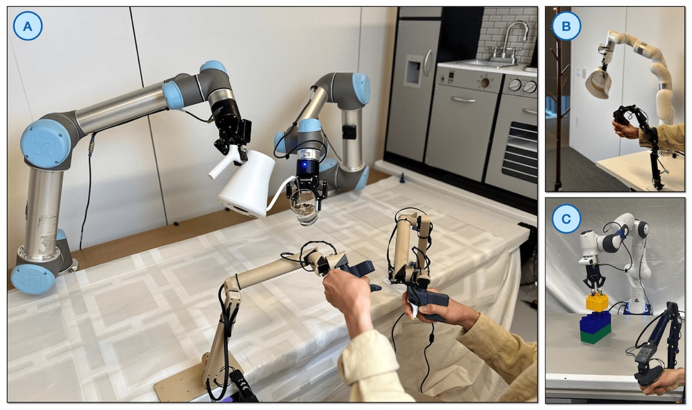

Executive Summary
9월 4일 테크크런치는 로봇 학습용 원격조작 데이터를 모으는 스타트업 XDOF가 8VC 주도로 약 12억 달러 밸류에이션의 시리즈 B를 막바지 협상 중이라고 보도했다. 6월에 7천만 달러 시리즈 A를 공개하며 스텔스를 나온 지 석 달 만이다. 이 회사는 모델도 만들지 않고 로봇도 만들지 않는다. 사람이 로봇을 원격으로 움직인 기록을 모아 프런티어 AI 랩과 로보틱스 기업에 넘긴다.
그 몸값의 실물이 무엇인지는 6월에 공개된 데이터셋에서 확인할 수 있다. XDOF 창업자 두 사람이 공저자로 이름을 올린 ABC-130K는 3,553시간짜리 양팔 조작 기록이다. 그런데 그 3,553시간 전부가 한 종류의 작업대에서, 세 면을 흰 벽으로 막은 인클로저 안에서 기록됐다. 배경 다양성이 좁아진다는 사실은 논문이 스스로 적어 두었다. 그리고 공개된 3,553시간과 별개로, 연구진에게는 개발용으로 쓴 7,000시간짜리 내부 코퍼스가 따로 있었다.
이 글은 XDOF가 파는 물건이 무엇인지, 그리고 공개된 쪽 데이터셋의 수집 조건이 어디까지 밝혀져 있는지를 본다. 로봇 학습 데이터를 밖에서 사 오는 팀에게 남는 물음은 계약서에 무엇을 적을 것인가다.
주요 수치
출처: Allshire 외 Scalable Behavior Cloning with Open Data, Training, and Evaluation(arXiv:2606.27375, 2026-06-25), Temkin TechCrunch(2026-09-04)
3,553시간
ABC-130K 실물 조작 기록
134,806개 에피소드, 195개 과제. 같은 팀이 개발용으로 쥐고 있던 내부 코퍼스는 7,000시간이다
8,000달러
그 기록을 모은 작업대 한 대 값
논문이 비교한 아지봇 G1은 3만 달러, 알로하 계열 장비는 약 2만 달러다
44%
하위 과제 주석이 붙은 비율
3,553시간 가운데 1,552시간에만 붙었다. 과제별 편차가 커서 티셔츠 개기는 전량에 붙어 있다
20곳
XDOF가 밝힌 고객사 수
이 가운데 몇 곳이 프런티어 랩인지는 "여러 곳"이라고만 알려져 있다
재조달 계획이 없던 회사가 석 달 만에 다시 열었다
XDOF는 2024년에 UC 버클리 연구자 필립 우(Philipp Wu, CEO)와 프레드 션투(Fred Shentu, CTO)가 세웠다. 6월에 7천만 달러 규모 시리즈 A를 공개했고, 스라이브 캐피털과 스파크 캐피털, 안드리센 호로위츠, 럭스, 원더코가 참여했다. 회사 이름의 DOF는 로봇이 움직일 수 있는 독립적인 방향의 수를 뜻하는 자유도에서 왔고, 앞의 X는 그 수에 상한을 두지 않겠다는 뜻이라고 우는 설명했다. 회사는 그렇게 빨리 다시 조달할 계획이 없었다. 연환산 매출이 5천만 달러에 근접할 만큼 성장이 빨라지자 벤처캐피털 쪽이 먼저 새 라운드를 제안했다고 거래를 아는 관계자들이 테크크런치에 말했다.
확정된 이야기는 아니다. 테크크런치도 총 조달 규모가 얼마인지, 12억 달러라는 밸류에이션에 신규 자금이 포함된 것인지 확인하지 못했다고 밝혔다. 거래 조건은 아직 최종이 아니며 바뀔 수 있다.
투자자들은 이 회사를 물리적 로보틱스판 스케일 AI 또는 머코어에 빗댄다. 실제 데이터 수집 경쟁자로는 메카 AI가 거론되고, 대규모 언어모델 바깥으로 넓혀 오는 스케일 AI와 마이크로원도 같은 자리를 노린다. 고객사는 20곳이고 그중 여러 곳이 프런티어 AI 랩이라고 회사가 앞서 테크크런치에 밝혔다. 스무 곳이 전부 프런티어 랩이라는 뜻은 아니다. 몇 곳인지는 공개되지 않았다.
파는 것은 라벨이 아니라 수집 파이프라인이다
테크크런치는 이 회사의 목표를 프런티어 AI 랩과 로보틱스 기업이 직접 만들기 어려운 데이터 파이프라인과 수집 도구, 주석 시스템을 짓는 것이라고 정리했다. 로보틱스 업계의 데이터 공급망을 통째로 외주로 맡는 구조에 가깝다. 대규모 언어모델은 인터넷 전체를 학습 재료로 삼았지만 물리 로봇에는 그에 해당하는 실물 데이터 뭉치가 없고, 그래서 수집 자체가 병목이 된다.
수집 방식은 두 갈래다. 하나는 사람이 원격으로 로봇 팔을 움직여 시연을 남기는 원격조작이고, 다른 하나는 사람이 몸에 센서를 달고 옷 개기나 상자 펼치기 같은 일상 작업을 기록하는 방식이다. 회사는 로봇을 원격으로 조종하는 인력과 몸에 센서를 착용하는 인력을 전 세계에서 채용하고 훈련할 계획이라고 밝혔다. 라벨을 붙이는 사람이 아니라 로봇을 움직이는 사람이 상품의 원천이라는 점에서, 기존 데이터 라벨링 회사와 인건비 구조가 다르다.
회사는 이 재료를 세 층으로 나눠 설명한다. 가장 값나가는 층은 고객이 실제로 배치할 바로 그 로봇에서 딴 원격조작 기록이고, 다음이 GELLO처럼 범용 장비로 모은 원격조작 기록이며, 맨 아래가 사람이 착용 센서로 남긴 일상 동작이다. 맨 아래 층에 쓸 착용 센서는 직접 만들 계획이라고 6월에 밝혔다. 데이터만 넘기는 사업은 막다른 길이 될 수 있다고 보고 정제와 도구, 주석까지 함께 붙였다는 설명도 덧붙였다.
랩들이 이 일을 직접 하지 않는 이유를 우는 이렇게 정리했다. 수십만 제곱피트짜리 창고에 로봇 수백 대를 놓아야 하고, 그 로봇들을 정비하고 물리 파라미터를 교정하고 조작 인력을 제대로 훈련시켜야 한다는 것이다. 6월 기준 직원 60명인 회사가 고객사 20곳에 파는 것은 이 운영 부담을 대신 지겠다는 약속에 가깝다.
2.1300달러짜리 리더 팔에서 시작한 회사
우는 박사과정에서 로봇이 대규모 데이터셋으로 학습하는 방법을 연구했다. 연구를 막은 것은 다룰 만한 대규모 데이터가 없다는 사정이었다고 그는 6월에 테크크런치에 말했다. 그래서 션투와 함께 GELLO라는 저비용 원격조작 장치를 만들었고, 이 연구가 로보틱스에서 널리 인용되면서 창업의 토대가 됐다.
2023년 논문에 적힌 GELLO의 설계는 단순하다. 조작하려는 로봇 팔과 같은 기구학 구조를 가진 리더 장치를 3D 프린팅 부품과 값싼 기성 서보 모터로 만든다. 장치 한 대의 자재비는 300달러 미만이다. 논문의 비교표를 보면 3D 마우스가 150달러, 메타 퀘스트 2를 쓰는 방식이 300달러, 로봇으로 로봇을 조종하는 방식이 3만 달러, 햅틱 장치가 4만 달러다. 연구진은 사용자 실험을 통해 GELLO가 VR 컨트롤러나 3D 마우스보다 더 안정적이고 효율적으로 시연을 모을 수 있음을 보였고, 프랑카와 UR5, xArm 세 기종용 설계를 공개했다.

여기서 한 가지를 정확히 해 둘 필요가 있다. GELLO의 이름에 든 General은 하나의 표준 좌표계를 뜻하지 않는다. 목표 로봇마다 그 팔과 같은 구조의 리더 장치를 따로 만드는 방법론이라는 뜻이다. GELLO가 표준화한 것은 좌표계가 아니라 저비용 리더 팔이라는 수집 방식 쪽이다.
ABC-130K가 실제로 기록한 조건
6월 25일 arXiv에 올라온 논문 「Scalable Behavior Cloning with Open Data, Training, and Evaluation」은 ABC라는 이름으로 데이터셋과 학습 코드, 시뮬레이션까지 묶어 공개했다. 핵심인 ABC-130K는 134,806개 에피소드, 195개 과제, 3,553시간이다. 초록에서는 3,500시간으로 반올림해 적었다. 시뮬레이션 원격조작 데이터 400시간도 함께 공개했다. 아파치 2.0 라이선스이며 허깅페이스에서 받을 수 있다.
다만 이 분량이 연구진이 쥐고 있던 전부는 아니다. 논문은 아키텍처 비교 실험을 공개 데이터셋이 아니라 내부 7,000시간 코퍼스로 돌렸다고 적는다. 공개용 데이터셋이 확정되기 전 개발 단계에서 갖고 있던 몫이라는 설명이다. 미세 조정 실험에서는 출발점 세 가지를 나란히 세웠는데, 맨땅에서 학습한 정책보다 공개된 3,553시간으로 사전학습한 정책이 낫고, 내부 7,000시간으로 사전학습한 정책이 네 과제 모두에서 그보다 또 나았다. 두 코퍼스가 내용에서 어떻게 다른지는 밝혀져 있지 않지만, 그 차이가 결과에 얼마나 남는지는 논문이 직접 재어 두었다.
규모보다 눈여겨볼 곳은 부록 C의 하드웨어 설명이다. 모든 수집과 평가는 I2RT의 YAM 6자유도 팔 두 대를 책상 위에 나란히 붙인 양팔 작업대에서 이뤄졌다. 카메라는 인텔 리얼센스 D405 세 대로 30Hz다. 한 대는 작업대 위에서 3인칭 시점을 잡고 나머지 두 대는 손목에 달렸다. 논문은 이 구성을 본문에서 8천 달러짜리 YAM 스테이션이라고 부른다. 그리고 두 팔은 세 면이 흰 벽으로 막힌 인클로저 안에 놓여 있다. 손끝까지 한 규격은 아니어서, 데이터셋 일부는 FlexPoint라는 다른 그리퍼로 모았다고 하드웨어 그림 설명에 적혀 있다. 지금 I2RT 상점에서 699달러에 파는 부품이다.
"인클로저는 학습 분포에서 배경 다양성을 좁히지만, (i) 우발적인 시각 교란에서 오는 평가 분산을 줄이고 (ii) 미세 조작 학습을 배경 일반화라는 교란 요인에서 분리한다. 다만 이렇게 가둬 둔 환경에서만 모은 데이터인데도, 우리가 학습시킨 정책 다수는 인클로저 밖으로 옮겨져 일부 실제 환경에 배포될 수 있었다."
ABC 논문 부록 C.1 하드웨어
스스로 밝힌 맞바꿈이라는 점이 중요하다. 배경을 좁히면 평가가 안정되고 미세 조작 학습이 깨끗해진다. 대신 그 데이터로 학습한 정책이 다른 배경에서 얼마나 버티는지는 별도로 물어야 할 문제로 남는다. 논문도 인클로저 밖 배포를 부차적 관찰로만 적었지 체계적으로 검증했다고 쓰지 않았다.
그 대가가 실제로 드러난 대목이 논문 안에 있다. 상자 접기는 사전학습 모델만으로는 실물 성공률이 0이었고, 더 엄격한 표준 작업 절차로 10시간을 더 모아 미세 조정해도 24퍼센트에 그쳤다. 그래서 연구진은 정책을 굴리다가 막히는 순간에만 사람이 끼어들어 고쳐 주는 방식으로 데이터를 더 모았는데, 이 개입 데이터는 인클로저를 걷어낸 상태에서 모았다. 그랬더니 개입 구간만 떼어 학습시킬 경우 정책이 배경 차이를 지름길로 삼아 성능이 오히려 나빠졌다. 결국 이전 회차 데이터 80퍼센트에 이번 회차 개입 10퍼센트, 나머지 구간 10퍼센트를 섞는 비율을 새로 잡아야 했다. 흰 벽은 배경 다양성만 좁힌 것이 아니라 나중에 다른 배경의 데이터를 섞을 때 걸림돌로도 돌아왔다.
메타데이터 쪽도 조건이 갈린다. 익명화한 조작자 식별자와 수집 시각은 전량에 붙어 있다. 반면 하위 과제 단위로 구간을 나눠 설명을 붙인 주석은 1,552시간 분량에만 있다. 논문은 다른 대목에서 하위 과제 주석이 붙은 몫을 전체의 44%로 적었다. 주석 시스템을 판다는 회사의 설명과 공개된 데이터셋의 주석 커버리지는 별개의 수치이니, 조달 협상에서는 이 둘을 따로 물어야 한다. 게다가 그 44%가 고르게 깔린 것도 아니다. 티셔츠 개기 과제는 모든 에피소드에 주석이 붙어 있다고 논문이 밝혀 두었으니, 과제에 따라 편차가 크다는 뜻이다.
논문은 자기 데이터셋을 기존 공개 데이터셋과 나란히 세워 비교한다. BridgeData-V2는 저가 위도우X 팔로 약 100시간, DROID는 단일 프랑카 팔로 350시간, 같은 YAM 플랫폼을 쓴 MolmoAct 2의 양팔 데이터는 720시간이다. 규모가 가장 가까운 아지봇 월드는 약 3,000시간이지만 3만 달러짜리 아지봇 G1에서 모았고, 알로하 계열 장비는 약 2만 달러라고 논문이 적었다.
3.1같은 3,553시간이 다 같지는 않다
총 시간은 한 덩어리로 적히지만 그 안이 균일하지는 않다. 논문 부록 H는 티셔츠 개기 과제 하나를 붙잡고 이 문제를 파고든다. 이 과제에만 약 268시간이 쌓여 있고, 조작자마다 일하는 방식이 뚜렷하게 갈린다. 가장 많이 기록한 0번 조작자는 1,183개 에피소드에 19.5시간을 남겼는데 한 편이 평균 59초로 짧고 단정하다. 1번 조작자는 226개 에피소드에 평균 205초를 썼고 접어 놓은 결과물의 품질도 낮다.
여기서 상식과 어긋나는 결과가 나온다. 잘하는 조작자의 데이터만 골라 학습시키면 좋아질 것 같지만, 실제로는 전체 조작자 데이터로 학습한 쪽보다 나빴다. 5점 만점 평균이 걸러 낸 쪽 3.3, 전체를 쓴 쪽 3.8이었고 열 번 중 완수도 두 번과 네 번으로 갈렸다. 다만 이 필터링 모델은 오래 돌리자 과적합이 보여 학습을 3만 스텝에서 끊었으니 완전히 같은 조건의 비교는 아니다. 대신 전체 데이터로 학습하되 조작자 식별자를 프롬프트에 함께 넣어 두자, 추론할 때 0번 조작자를 지목하는 것만으로 평균 4.6점에 열 번 중 여덟 번 완수까지 올라갔다. 학습된 체크포인트는 그대로 두고 프롬프트만 바꾼 결과다.
익명화한 조작자 식별자가 왜 값이 나가는지가 여기서 드러난다. 궤적을 더 모으는 대신 라벨을 한 층 더 붙여 두면, 배포 시점에 어느 조작자의 습관을 따를지 고를 수 있다. 하위 과제 주석도 같은 일을 한다. 주석 없이 학습한 정책은 이미 개어 놓은 티셔츠를 다시 집어 펴는 실패를 열 번 중 다섯 번 보였는데, 지금 어느 단계인지를 언어로 넣어 주자 그 실패가 사라졌다. 견적서에 적힌 총 시간이 같아도 이 두 층의 라벨이 붙어 있느냐가 나중에 쓸 수 있는 범위를 가른다. 덧붙이면 이 실험들의 바탕 모델도 공개 데이터셋이 아니라 내부 7,000시간 코퍼스로 사전학습한 것이다.
시간이 지나면 같은 사람도 달라진다. 연구진은 미세 조정 데이터를 고를 때 조작자마다 나중에 모은 절반만 남겼다. 수집이 이어질수록 조작자가 능숙해져 뒤쪽 기록이 더 낫다는 이유였다. 같은 사람이 같은 장비로 모은 기록도 언제 모았느냐에 따라 값이 갈린다는 뜻이다.
3.2누가 낸 데이터셋인가
테크크런치는 XDOF가 UC 버클리 AI 리서치 랩과 손잡고 ABC를 낸다고 적었다. 논문의 표기는 조금 다르다. 소속은 다섯 곳으로 UC 버클리, MIT, 아마존 FAR, XDOF, 카네기멜런대학이 나란히 적혀 있고, 별표가 붙은 핵심 기여자 여섯 명은 아마존 FAR 인턴십 기간에 이 작업을 했다고 각주에 명시돼 있다. 프로젝트 깃허브 조직 이름도 amazon-far다. XDOF라는 이름은 논문 전체에서 이 소속 표기 한 줄 말고는 나오지 않는다.
그렇다고 XDOF가 남의 성과에 이름만 얹은 것은 아니다. 창업자인 필립 우와 프레드 션투가 저자 명단에 있고, XDOF 소속으로 표기된 저자가 다섯 명이다. 회사 블로그는 자신들의 역할을 스스로 이렇게 적었다. 논문 저자들에게 XDOF의 평가 서비스를 제공했고, 루브릭을 함께 정의해 시뮬레이션과 실물에서 여러 아키텍처와 하이퍼파라미터의 체크포인트를 평가했다는 것이다. 데이터를 실은 하드웨어에 대해서는 모든 데이터가 I2RT의 YAM 팔을 쓴 양팔 스테이션에서 나왔다고 밝혔다. 정확히 말하면 버클리와 MIT 연구자들이 아마존 FAR 인턴십 기간에 수행하고 아마존 FAR 명의로 공개된 데이터셋에 XDOF가 평가 인프라를 댄 구조에 가깝다.
리더 장치에 대한 서술도 정확히 옮길 필요가 있다. 부록 F는 이 논문의 데이터를 포함해 대부분의 로봇 원격조작 데이터가 리더 팔로 수집된다고 적으면서 알로하와 GELLO를 함께 인용한다. GELLO 리더 팔 한 쌍을 쓴다고 못 박은 대목은 시뮬레이션 원격조작 설명이고, 실물 코드 설명에서는 GELLO 리더 팔과 YAM 팔로워 팔이 각각 독립 노드로 통신한다는 예시가 나온다. 실물 3,553시간 전량이 GELLO로 수집됐다고 단정할 문장은 논문에 없다.
수집 장비가 카탈로그 품목이 될 때
수집 장비가 데이터의 성질을 결정한다는 말은 이 회사 대표 본인의 표현이기도 하다. 6월 인터뷰에서 우는 착용 센서를 왜 직접 만들려 하는지 설명하며 이렇게 말했다.
"카메라를 무엇으로 고르느냐가 데이터의 품질을 좌우하고, 그것이 다시 손 추적 알고리즘의 성능으로 이어진다. 하드웨어를 처음부터 잘 설계해 두지 않으면 모아 놓은 데이터에 예상하지 못한 아주 구체적인 문제가 생길 수 있다."
필립 우, 테크크런치 2026년 6월 17일
데이터 규격이 하드웨어 규격으로 굳는 경로는 생각보다 짧다. 팔을 만든 I2RT의 온라인 상점 첫 화면에는 지금 ABC 키트 출시를 알리는 배너가 걸려 있다. 제품명은 ABC 박스이고, 설명문은 UC 버클리와 MIT, 아마존 FAR, XDOF가 낸 오픈소스 행동 복제 스택 ABC와 곧바로 맞물린다고 적는다.

"기구학이 일치한다. ABC 박스의 두 팔은 ABC-130K를 수집할 때 쓴 팔로워 구성을 그대로 따르므로, 공개된 데이터셋과 체크포인트로 학습한 정책이 최소한의 보정만으로 여러분의 하드웨어로 옮겨진다."
I2RT ABC 박스 제품 설명(2026년 9월 7일 확인)
같은 설명문은 수동 리더 팔이나 YAM 리더 팔과 짝지어 쓰라며 GELLO 호환을 명시하고, 관절 한계와 작업 공간 형상, 카메라 마운트 위치가 함께 공개된 시뮬레이션 모델과 맞도록 설계했다고 밝힌다. 가격은 2026년 9월 7일 기준 ABC 리서치 키트가 6,349달러, ABC 박스가 9,599달러다. 같은 상점에서 YAM 팔 한 대가 2,999달러, 리더 팔이 2,999달러, 턴키 양팔 원격조작 스테이션이 23,999달러에 팔린다. 데이터셋 이름이 붙은 작업대가 이미 장바구니에 담을 수 있는 물건이 됐다는 뜻이다.
다만 여기서 한 발 더 나가 프런티어 랩 스무 곳이 같은 좌표계와 지연 특성을 물려받게 됐다고 쓰면 자료보다 앞서 나가는 것이다. 스무 곳은 전체 고객 수이고 그중 랩이 몇 곳인지는 공개되지 않았다. XDOF가 고객사에 돌리는 상용 수집 파이프라인이 ABC-130K와 같은 구성인지도 밖에서는 확인할 수 없다. 지금 확인되는 것은 공개된 쪽의 조건뿐이고, 그 조건이 상당히 구체적으로 적혀 있다는 점이 오히려 이 데이터셋의 미덕이다.
앞서 본 데이터 층위에서는 반대 방향의 힘도 읽힌다. 가장 값나가는 층은 고객이 실제로 배치할 그 로봇에서 딴 기록이라고 회사가 밝혔다. 한 종류의 작업대로 수렴하는 흐름과 고객 장비마다 따로 모아 주는 사업이 같은 회사 안에 함께 있는 셈이다.
그래서 로봇 학습 데이터를 밖에서 사 오는 팀이라면 계약서에서 확인할 것이 다섯 가지다.
- 수집 환경이 어디까지 기록으로 남는가. 흰 벽 안에서 모은 3,553시간과 실제 매장이나 공장에서 모은 3,553시간은 같은 값이 아니다. ABC 논문처럼 벽과 카메라 배치까지 적어 주는 공급자가 오히려 드물다.
- 공급자가 가진 것과 우리에게 오는 것이 같은가. ABC 팀은 내부 7,000시간 코퍼스를 따로 갖고 있었고, 그것으로 사전학습한 정책이 공개된 3,553시간으로 사전학습한 정책보다 네 과제 모두에서 나았다. 이 격차는 견적서에 항목으로 적히지 않는다.
- 주석이 어느 층위에 몇 퍼센트나 붙는가. ABC-130K에서 하위 과제 주석이 붙은 분량은 전체의 44%였고 과제별 편차도 컸다. 조작자 식별자와 하위 과제 주석이 붙어 있으면 배포 시점에 정책의 행동을 골라 쓸 수 있다는 것을 논문이 실험으로 보였다. 총 시간만 적힌 견적서로는 이 차이가 보이지 않는다.
- 하드웨어를 바꾸면 다시 모아야 하는가. 기구학 구조와 카메라 위치, 제어 주기, 리더 장치 종류가 명세에 적혀야 이식 비용을 계산할 수 있다. ABC 박스의 판매 문구가 정확히 이 값을 약속하고 있다는 점이 참고가 된다.
- 평가를 누가 하는가. 데이터를 판 쪽이 루브릭을 설계하고 체크포인트 평가까지 맡는 구조라면, 성능 수치의 독립성을 따로 확보해야 한다. ABC의 경우 XDOF가 자기 블로그에 그 역할을 맡았다고 적어 두었고, 그 글은 더 필요하면 연락하라는 문장으로 끝난다. 다만 ABC는 채점 기준표를 부록에 표로 싣고 100시간이 넘는 평가 롤아웃을 점수와 함께 공개해 밖에서 되짚을 여지를 남겼다. 이만큼 열어 두는 공급자가 드무니, 열지 않는 쪽에는 왜 열지 않는지를 물어야 한다.
로봇 데이터를 돈으로 살 수 있는가라는 물음은 페블러스도 지난 리포트에서 다룬 적이 있고, 데이터와 모델을 함께 공개한 사례로는 Ai2의 MolmoAct 2를 정리해 두었다. 공교롭게도 MolmoAct 2의 720시간도 같은 YAM 플랫폼에서 나왔다. 저가 양팔 작업대 한 종류가 여러 연구실의 공통 바닥이 되어 가는 중이라는 신호다.
Editor's Note
페블러스가 데이터 품질을 진단할 때 가장 먼저 묻는 것은 이 데이터가 어떤 조건에서 만들어졌는가다. 로봇 데이터에서는 그 조건이 곧 장비다. 어떤 팔로, 어떤 카메라 배치로, 어떤 벽 안에서 모았는지가 데이터의 성질을 결정하고, 그 명세가 계약서에 없으면 나중에 되짚을 방법도 없다. 이 글은 어느 공급자가 낫다는 답을 내놓지 않는다. 다만 값을 치르기 전에 무엇을 적어 두어야 하는지를 가늠할 자료로는 쓸 만하다.
여기까지 읽어 주셔서 감사하다. 이 글의 사실관계는 테크크런치의 9월 보도와 6월 창업자 인터뷰, ABC 논문 부록, XDOF 블로그와 I2RT 제품 페이지 원문에서 직접 확인했다. 로봇 학습 데이터를 외부에서 조달해 본 팀이 있다면 계약서에 어떤 항목을 넣었는지 나눠 주시면 좋겠다.
(주)페블러스 데이터 커뮤니케이션팀
2026년 9월 7일
참고문헌
1차 보도
- 1.Temkin, M. (2026). "XDOF, just three months out of stealth, is in talks for a Series B at a $1.2B valuation." TechCrunch, 2026-09-04.
- 2.Fernholz, T. (2026). "Collecting robot training data is dirty, unglamorous work. Some AI labs are already paying XDOF to do it." TechCrunch, 2026-06-17.
학술 논문
- 3.Wu, P., Shentu, Y., Yi, Z., Lin, X., Abbeel, P. (2023). "GELLO: A General, Low-Cost, and Intuitive Teleoperation Framework for Robot Manipulators." IROS 2024.
- 4.Allshire, A., Singh, H. G., Singh, R., Rashid, A., Choi, H., McAllister, D. 외. (2026). "Scalable Behavior Cloning with Open Data, Training, and Evaluation." arXiv:2606.27375.
업계 소스
- 5.The XDOF Team (2026). "ABC-130K: The largest open source teleoperation dataset." XDOF Blog, 2026-06-17.
- 6.I2RT Robotics (2026). "ABC Box." I2RT 제품 페이지 (2026-09-07 확인).